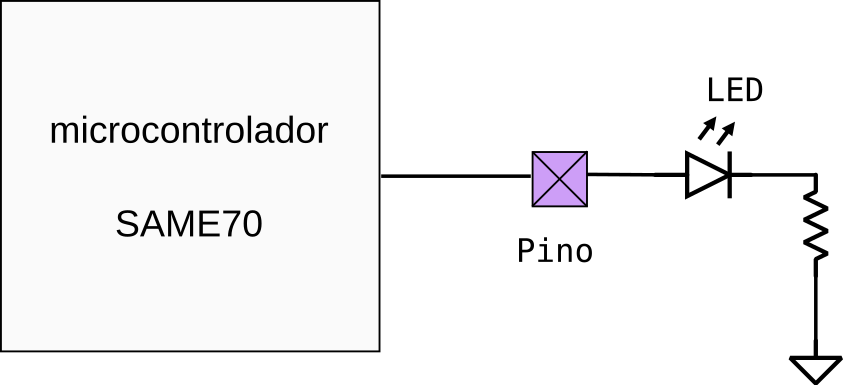
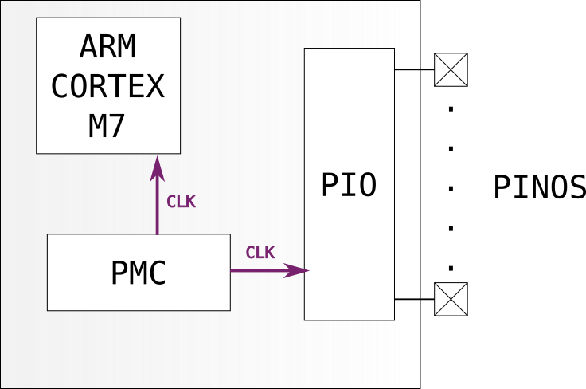
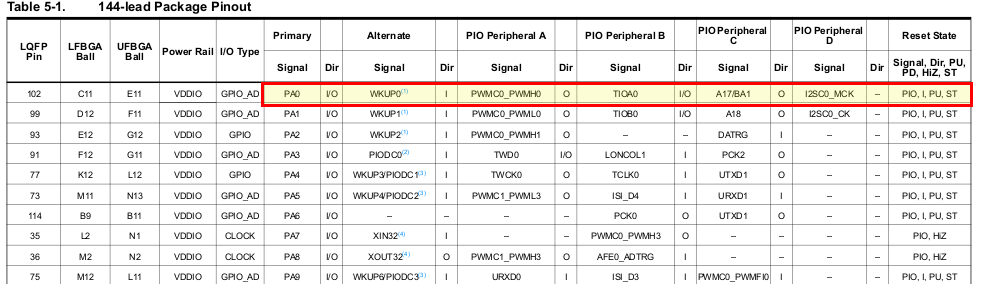

Lab 1 - Digital IO¶
Leitura recomendada
Periféricos¶
Leitura Manual
Utilize o manual encontrado em: Manuais/SAME70 para mais informações nesse assunto.
Periféricos são hardwares auxiliares encontrados no microcontrolador (uC) que fornecem funcionalidades extras tais como: gerenciador de energia (SUPC), comunicação serial UART (UART), comunicação USB/ Ethernet/ Bluetooth ..., controlador de saída e entrada paralela (PIO), dentre muitos outros.
Os periféricos são configuráveis via escrita/leitura nos registradores do microcontrolador, cada periférico possui um endereço único mapeado em memória.
Controlando um pino¶
Vamos imaginar uma aplicação comum de um microcontrolador: controlar um pino digital (Ligado/ Desligado). Esse pino pode estar conectado a um LED. Nosso objetivo é conseguirmos escrever um software que é capaz de colocar energia (VCC/ ligado) no pino, ou desligar o pino (GND/ desligar). Como ilustrado no diagrama a seguir:

Dois periféricos serão utilizados para que possamos controlar os pinos do uC de forma digital (liga/ desliga), são eles o Power Manager Contoller (PMC) e o Parallel Input Output (PIO). O PMC é o periférico responsável por "gerenciar" a energia dos demais periféricos do uC SAME70 e o PIO é o periférico responsável por controlar um pino digital desse uC. Como ilustrado no diagrama a seguir:

Info
Os termos técnicos podem variar entre fabricantes, porém o conceito é o mesmo. Por exemplo, é comum o uso de General Propose I/O (GPIO) no lugar de PIO.
Note
Nesse exemplo, a memória do uC está omitida. Ela pode ser considerada como um periférico do uC. Nesse caso seriam adicionados mais dois periféricos, um para a memória de programa (flash) e outra para a memória de dados (SRAM)
Power Manager Contoller - PMC¶
Leitura datasheet
Seção 31 do datasheet SAME70
O Power Management Controller (PMC) é um periférico responsável por gerenciar a energia e clock dos demais periféricos. Para utilizarmos um periférico é necessário primeiramente ativarmos o mesmo no PMC.

Cada periférico é referenciado no PMC via um número único (ID), esse ID também será utilizado para o gerenciamento de interrupções. Os IDs estão listados na Tabela: 13.1 do datasheet SAM-E70.

Parallel Input Output (PIO)¶
Leitura datasheet
Secção 32 do datasheet. Leitura necessária
No ARM-Atmel os pinos são gerenciados por um hardware chamado de Parallel Input/Output Controller (PIO), esse dispositivo é capaz de gerenciar até 32 diferentes pinos (I/Os).
Além do controle direito do pino pelo PIO, cada I/O no ARM-Atmel pode
ser associado a uma função diferente (periférico), por exemplo: o I/O
PA20 pode ser controlador pelo periférico do PWM enquanto o PA18
pode ser controlador pela UART.
Isso fornece flexibilidade ao desenvolvimento de uma aplicação, já que os I/Os não possuem uma funcionalidade fixa. Existe uma tabela que informa quais I/Os cada periféricos podem controlar.

Podemos interpretar a tabela como: o pino 102 do microcontrolador
identificado como PA0 (PIOA_0) pode ser utilizado como WKUP0
(wakeup) ou mapeado para um dos tres perifericos:
- Periférico A: PWM (Pulse width modulation)
- Periférico B: TIOA0 (Timer 0)
- Periférico C: I2C_MCL (I2C master clear)
A tabela na página 16 do datasheet (Table 5-1) ilustra quais periféricos podem ser associados aos respectivos pinos, a Fig. Mux PIOA mostra as opções para o PIOA0 até PIOA9.
O SAME70 possui internamente 5 PIOs: PIO**A**, PIO**B**, PIO**C**, PIO**D** e PIO**E**. Cada um é responsável por gerenciar até 32 pinos.
Os I/Os são classificados por sua vez em grandes grupos: A, B,C …. (exe: PA01, PB22, PC12) e cada grupo é controlado por um PIO (PIOA, PIOB, PIOC, …).
Cada PIO possui controle independente de energia via o PMC, sendo necessário ativar o clock de cada PIO para que o periférico passe a funcionar.

Configurações¶
O PIO suporta as seguintes configurações:
- Interrupção em nível ou borda em qualquer I/O
- Filtragem de "glitch"
- Deboucing
- Open-Drain
- Pull-up/Pull-down
- Capacidade de trabalhar de forma paralela
Iremos ver para que serve algumas dessas configurações ao longo do curso.
Funcionalidade¶
O diagrama de blocos do PIO é ilustrado no diagrama de blocos (Block Diagram)

onde:
-
Peripheral DMA (direct memmory access) controller (PDC): O P/IO pode receber dados via DMA.
- DMA é uma forma automática de transferência de dados.
-
Interrupt Controller: Já que o PIO suporta interrupções nos I/Os o mesmo deve se comunicar com o controlador de interrupções para informar a CPU (NVIC) que uma interrupção é requisitada.
-
PMC: A energia e clock desse periférico é controlado pelo PMC (Power management controller).
-
Embedded peripheral: O acesso aos pinos pelos periféricos do uC é realizado via PIO.
Um diagrama lógico mais detalhado pode ser encontrado no datasheet (I/O Line Control Logic), esse diagrama mostra as funções dos registradores e seu impacto no PIO.